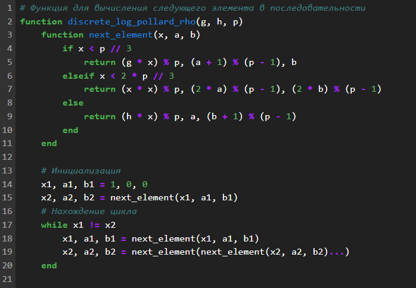
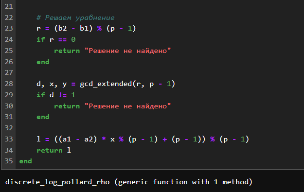

Евдокимов Максим Михайлович. Группа - НФИмд-01-24.
04 октября, 2024, Москва, Россия
Цели и задачи работы
Цель лабораторной работы
Вычисление дискретных логарифмов в конечном поле.
Задание
Реализовать алгоритм, реализующий р-Метод Полларда для задач
дискретного логарифмирования программно.
Теоретическое введение
алгоритм
р-Метод Полларда для задач дискретного логарифмирования
p-Метод Полларда (Pollard’s rho method for discrete logarithms) — это
алгоритм, используемый для решения задачи дискретного логарифмирования в
конечных полях. Задача дискретного логарифмирования заключается в
нахождении целого числа x
такого, что:
gx ≡ h (mod p)
где g, h, и p — известные целые числа, а p — простое число.
Основные шаги алгоритма
Разделение последовательности:
Последовательность {g0, g1, g2, ..., gp − 1}
разбивается на три подмножества S0, S1, и S2 на основе некоторого
правила. Например, можно использовать остаток от деления на 3.
Функция перехода:
Определяется функция перехода f(x), которая перемещает
элементы между подмножествами. Обычно используется следующая
функция:
$$f(x) = \begin{cases}
x \cdot g \pmod{p} & \text{если } x \in S_0, \\
x \cdot h \pmod{p} & \text{если } x \in S_1, \\
x^2 \pmod{p} & \text{если } x \in S_2.
\end{cases}$$
Поиск коллизии:
Используем метод “черепахи и зайца” для поиска коллизии.
Решение уравнения:
Пусть найдены i = 5 и
j = 10. Тогда: 55 ≡ 3 (mod 7) Проверяем: 55 = 3125 ≡ 3 (mod 7) Таким
образом, x = 5 является
решением.
Ход работы
Расширенный
алгоритм Евклида для нахождения обратного элемента
Расширенный алгоритм Евклида
Функция
для вычисления следующего элемента в последовательности

Функция для вычисления часть
1

Функция для вычисления часть
2
Тестовые значение
Стартовые значения и
переменные
Результаты и тесты
Вызов и вывод результатовПроверка по a^x = b (mod p)Результаты проверки
Выводы по проделанной работе
Вывод
В ходе выполнение лабораторной работы был изучен и реализован способ
определения дискретного логарифма для дискретного логарифмирования в
конечном поле с использованием алгоритм, реализующий р-Метод Полларда
для задач дискретного логарифмирования.